Clinical Approach to the Neurovascular Supply of the Distal Upper Extremity
- The brachial artery splits in the cubital fossa. The radial artery runs under brachioradialis: the pulse is at the distal radius, then it wraps round into the snuffbox on the scaphoid. The ulnar artery runs under pronator teres and gives off the common interosseous artery. Collaterals round the elbow keep the forearm alive if the brachial is clamped.
- Cubital fossa: brachioradialis, pronator teres and the line between the epicondyles. Contents lateral → medial: biceps Tendon, brachial Artery, median Nerve (“TAN”), with the median cubital vein on top.
- Median nerve: between the heads of pronator teres, then between FDS and FDP; its anterior interosseous branch supplies the deep layer. At risk in the cubital fossa, in pronator syndrome and in the carpal tunnel.
- Ulnar nerve: behind the medial epicondyle (the “funny bone”), between the heads of FCU, through Guyon's canal (pisiform + hook of hamate). It supplies FCU and the medial half of FDP.
- Radial nerve splits at the elbow. The deep branch pierces supinator and becomes the posterior interosseous nerve, supplying the posterior forearm. The superficial branch is sensory to the dorsum of the hand lateral to the 4th digit and crosses the snuffbox.
- Ulnar neuropathy at the elbow (cubital tunnel): medial elbow pain and tingling in the ring and small fingers. Objective loss is in the ulnar territory of the hand, not the forearm. Weakness, if any, is in the small hand muscles. Treat by no leaning and no night-time hyperflexion (towel splint); surgery if refractory or weak.
Learning Objectives
- Determine the sensory and motor loss anticipated with injuries to specific sites of the plexus (the roots and the terminal branches).
- Identify the major arteries and veins of the upper extremity and their relationships to surrounding structures.
- Create a differential diagnosis and management plan for upper extremity complaints: numbness, weakness, pain and loss of range of motion.
- Describe the anatomic basis of common elbow and arm complaints, including ulnar neuropathy, and outline their diagnosis and management.
Dr. Charys Martin (the forearm's vessels, then the nerves of the anterior and posterior forearm, 82 minutes) and Dr. Caitlin Cassidy (nerve problems at the elbow, 10 minutes), 94 minutes in all. It continues from 8.4 in the arm. The hand's nerves and carpal tunnel syndrome come in the wrist and hand modules.
The Vessels
Dr. Martin's first recording.
Arteries of the Forearm
At the distal cubital fossa the brachial artery splits into the radial and ulnar arteries, named for the side they run down.
| Artery | Course | Branches |
|---|---|---|
| Radial | Deep to brachioradialis; the radial pulse is taken against the distal radius, between the FCR and APL tendons. It then wraps laterally round the wrist to the back, through the anatomical snuffbox on the scaphoid. | Recurrent radial (joins the radial collateral round the elbow) |
| Ulnar | Deep to pronator teres, then down the ulnar side; enters the wrist lateral to the pisiform | Anterior and posterior ulnar recurrent (join the inferior and superior ulnar collaterals) Common interosseous, which splits at once into the anterior interosseous (with the anterior interosseous nerve, on the front of the interosseous membrane) and the posterior interosseous (over the membrane into the posterior compartment) |
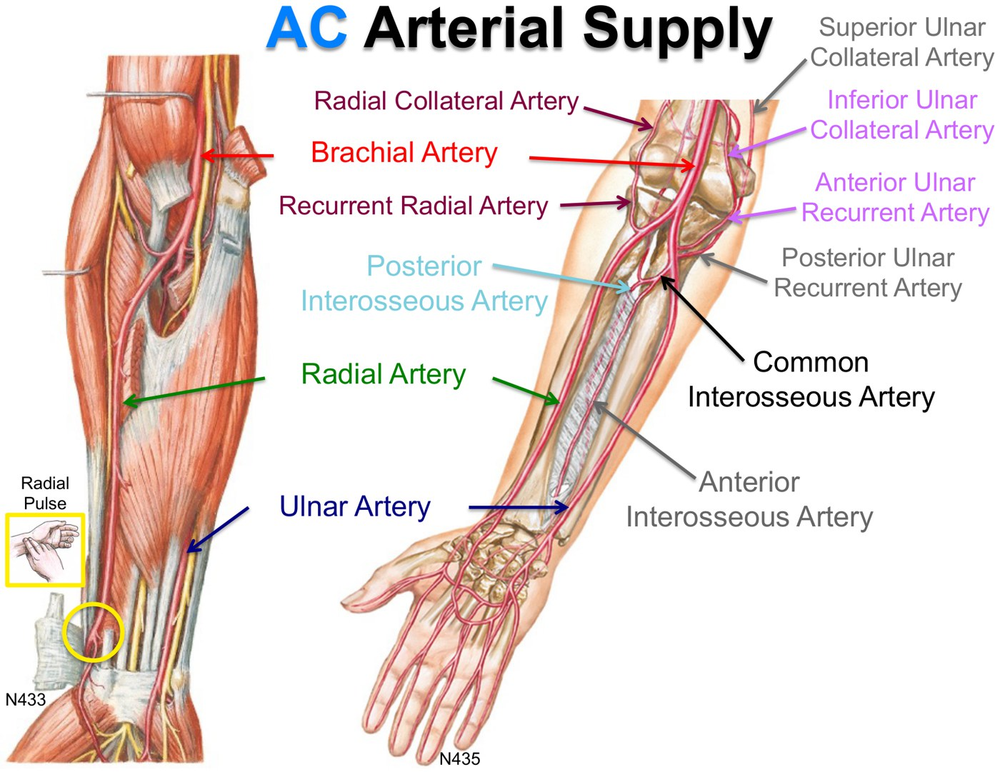
Anterior forearm arteries and the elbow collaterals. Slide from the deck (Netter).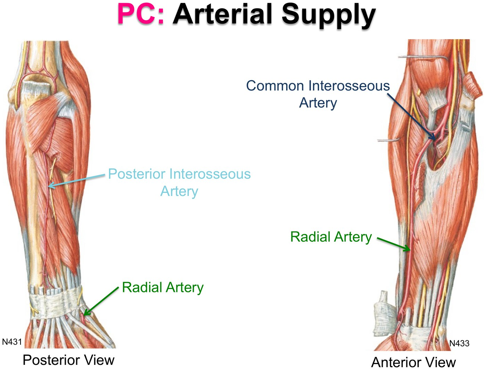
Posterior forearm: posterior interosseous artery. Slide from the deck (Netter).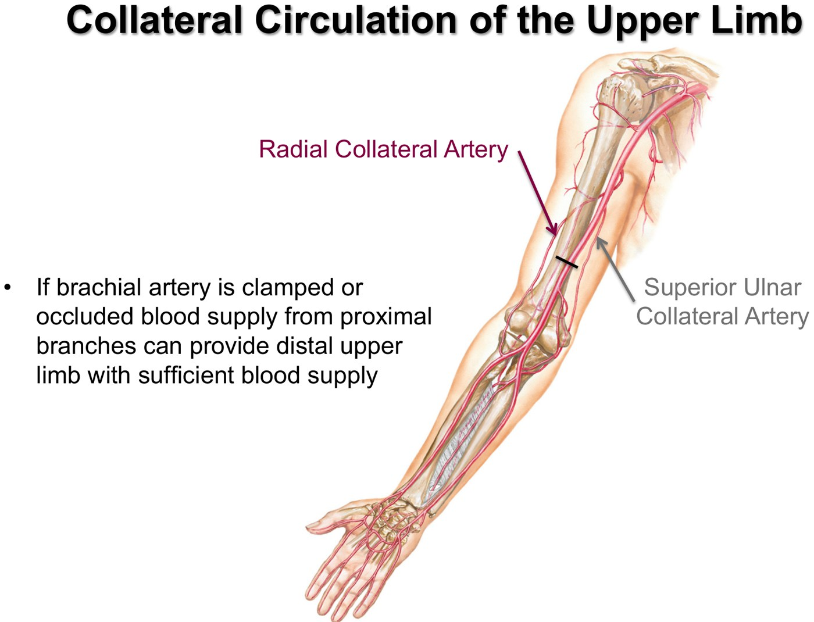
Collateral circulation at the elbow. Slide from the deck.The collateral arteries coming down from above (radial collateral, superior and inferior ulnar collateral) meet the recurrent arteries coming up from below. If the brachial artery is occluded or clamped in surgery distal to the profunda brachii, this network still gets enough blood to the forearm and hand.
Veins and the Cubital Fossa
The dorsal venous network on the back of the hand drains into the cephalic (lateral) and basilic (medial) veins, joined across the cubital fossa by the median cubital vein. The textbook arch is often just a network, and the connections vary a lot. Perforating veins shunt blood from the superficial veins into the paired deep veins (radial, ulnar, brachial) that run with the arteries.
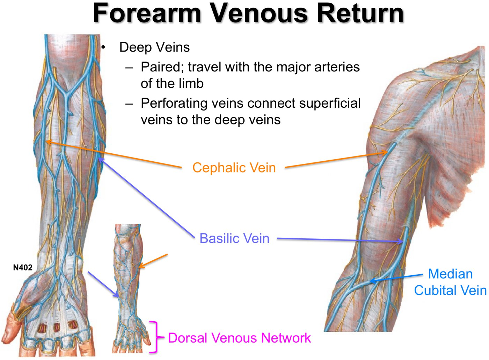
Forearm veins. Slide from the deck (Netter).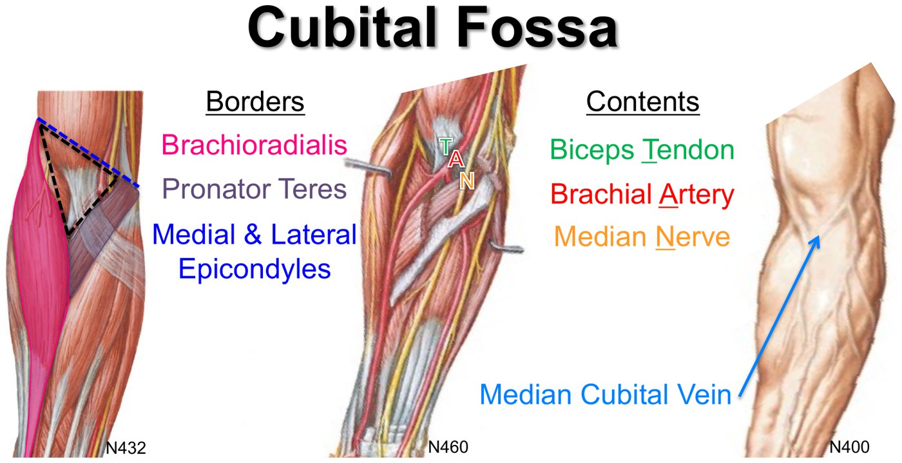
Cubital fossa: borders and “TAN”. Slide from the deck (Netter); the photographs of an IV, a BP cuff and a blood draw are left out.| Cubital fossa | |
|---|---|
| Shape | A shallow triangular depression on the front of the elbow |
| Borders | Brachioradialis (lateral), pronator teres (medial), a line through the medial and lateral epicondyles (top) |
| Contents, lateral → medial | Biceps Tendon (easy to palpate) → brachial Artery (and veins) → median Nerve: “TAN”. Also the radial nerve and its branches, laterally. |
| Superficial | Median cubital, cephalic and basilic veins; the medial and lateral cutaneous nerves of the forearm |
| Why it matters | The median cubital vein is used for blood draws and IVs. The brachial artery is used for blood pressure: its pulse is felt against the biceps border higher up, or against the biceps tendon in the fossa. All three TAN structures are fairly superficial here. |
Knowledge check: the angiogram
Label the arteries on an arm angiogram: A brachial, B ulnar, C radial.
The Nerves
Dr. Martin's recordings on the nerves of the anterior and posterior forearm.
The Median Nerve
Musculocutaneous has already ended (as the lateral cutaneous nerve of the forearm), and the radial nerve ducks into the posterior forearm, so the median and ulnar nerves supply the anterior forearm.
| Median nerve (C5–T1) | |
|---|---|
| Course | Through the cubital fossa deep to the bicipital aponeurosis and the median cubital vein, medial to the brachial artery → between the two heads of pronator teres → between FDS and FDP → under the flexor retinaculum (carpal tunnel) |
| Supplies directly | Pronator teres, FCR, palmaris longus, FDS |
| Anterior interosseous branch | Leaves just below the cubital fossa and runs on the interosseous membrane with its artery: lateral half of FDP, FPL, pronator quadratus |
| Sites at risk | 1. Cubital fossa: unprotected and superficial (it can be severed there) 2. Between the heads of pronator teres: pronator syndrome 3. Deep to the flexor retinaculum: carpal tunnel syndrome (in the wrist and hand modules) |
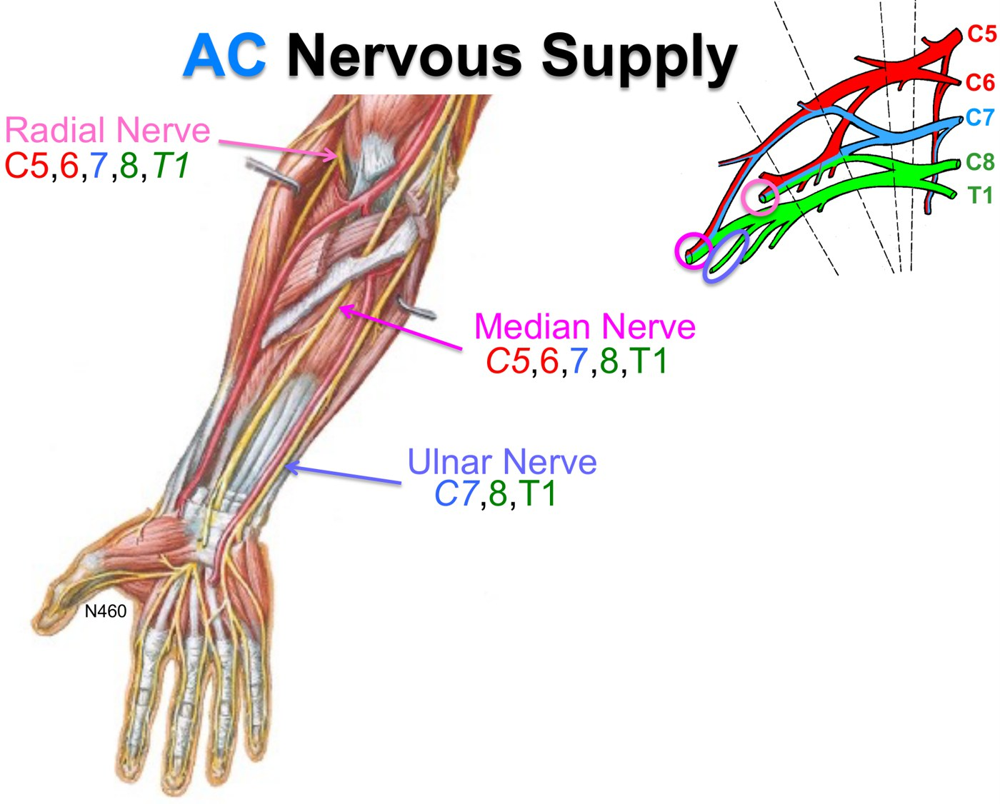
The three nerves entering the forearm. Slide from the deck (Netter).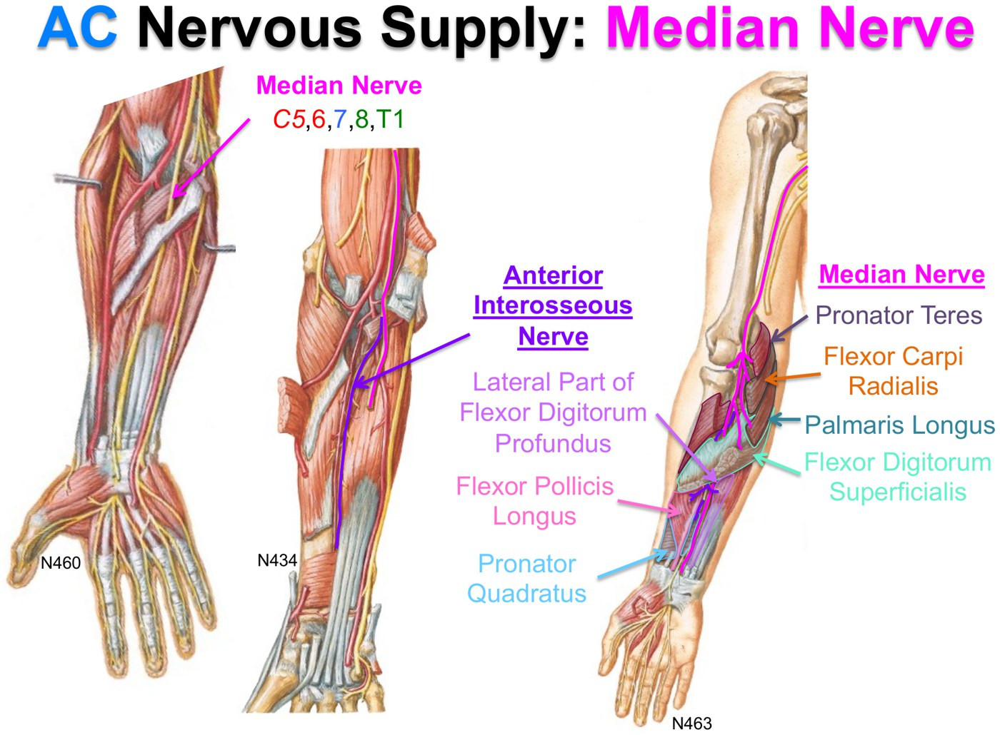
Median nerve and its anterior interosseous branch. Slide from the deck (Netter).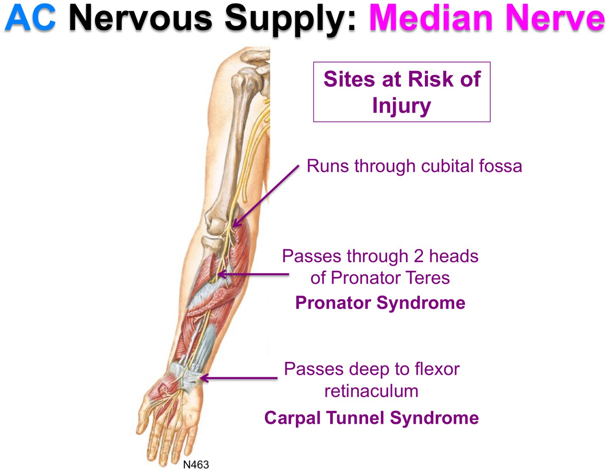
Median nerve: three sites at risk. Slide from the deck (Netter).Any nerve that passes through a muscle can be squeezed when that muscle hypertrophies. In pronator syndrome the median nerve is compressed between the two heads of pronator teres, usually from muscle hypertrophy with elbow overuse. It causes pain and tenderness over the proximal anterior forearm and altered sensation over the palmar lateral 3½ digits and the adjacent palm.
The Ulnar Nerve
| Ulnar nerve | |
|---|---|
| Course | Down the medial arm → behind the medial epicondyle → forward between the two heads of FCU → down between FCU and FDP → through Guyon's (ulnar) canal at the wrist |
| Supplies in the forearm | FCU and the medial half of FDP (digits 4, 5): the “1½”. Location, location, location: it runs right between them. |
| Sites at risk | 1. Behind the medial epicondyle: on bone and just under the skin, so at risk from external trauma, posterior elbow dislocation and supracondylar fractures 2. Between the two heads of FCU: compression from hypertrophy 3. Guyon's canal at the wrist |
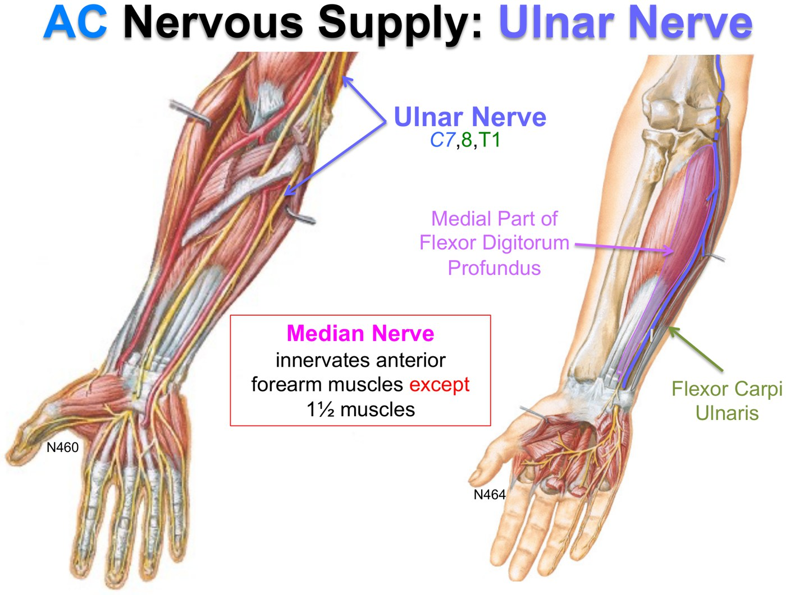
Ulnar nerve: FCU and medial FDP. Slide from the deck (Netter).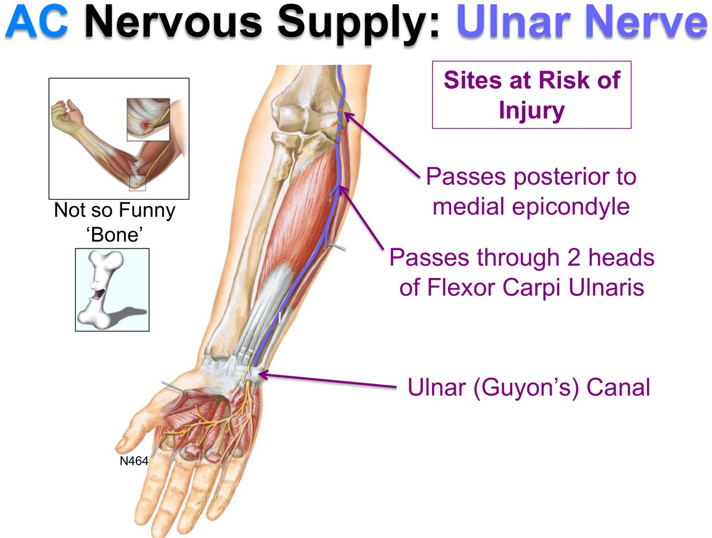
Ulnar nerve: three sites at risk. Slide from the deck (Netter).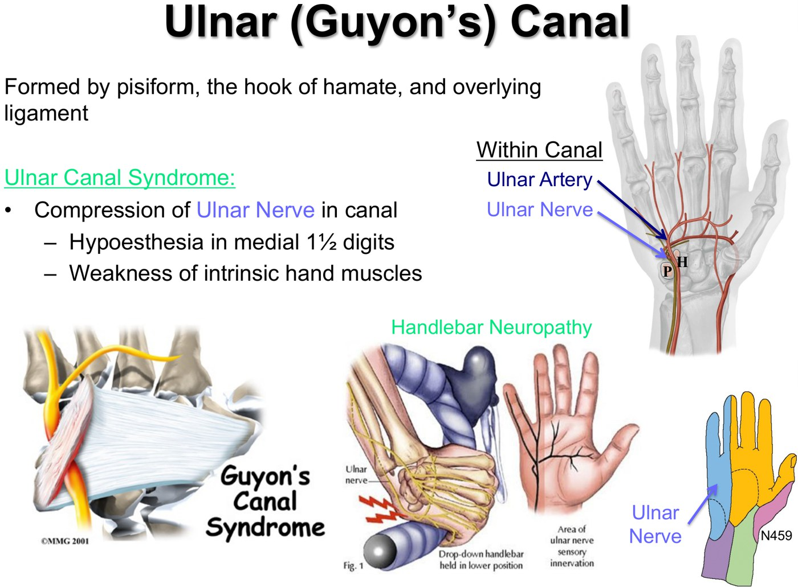
Guyon's canal and handlebar neuropathy. Slide from the deck.Find your medial epicondyle and dig a fingernail in just behind it: the cord that rolls under it is the ulnar nerve. That's what you hit when you “hit your funny bone”, with tingling down into the forearm and hand.
Guyon's canal is formed by the pisiform, the hook of the hamate and the overlying (pisohamate) ligament, and carries the ulnar artery and nerve. Compression there (ulnar canal syndrome) gives hypoesthesia of the medial 1½ digits and weakness of the intrinsic hand muscles. Cyclists get it from leaning on extended wrists with pressure over the hook of the hamate: handlebar neuropathy.
The Radial Nerve
| Radial nerve (C5–T1) | |
|---|---|
| In the arm | Runs in the radial (spiral) groove and gives off the posterior cutaneous nerve of the forearm (skin of the posterior forearm) |
| At the elbow | Appears in the lateral cubital fossa between brachialis and brachioradialis, then splits into two terminal branches |
| Deep branch | Pierces supinator and continues as the posterior interosseous nerve between the superficial and deep extensors. Motor to most of the posterior forearm. |
| Superficial (dorsal sensory) branch | Runs under brachioradialis and emerges just above the wrist, crossing the roof of the anatomical snuffbox. Sensory to the dorsum of the hand lateral to the 4th digit. |
| Sites at risk | 1. Where it pierces supinator (hypertrophy compresses it) 2. The superficial branch in the snuffbox |
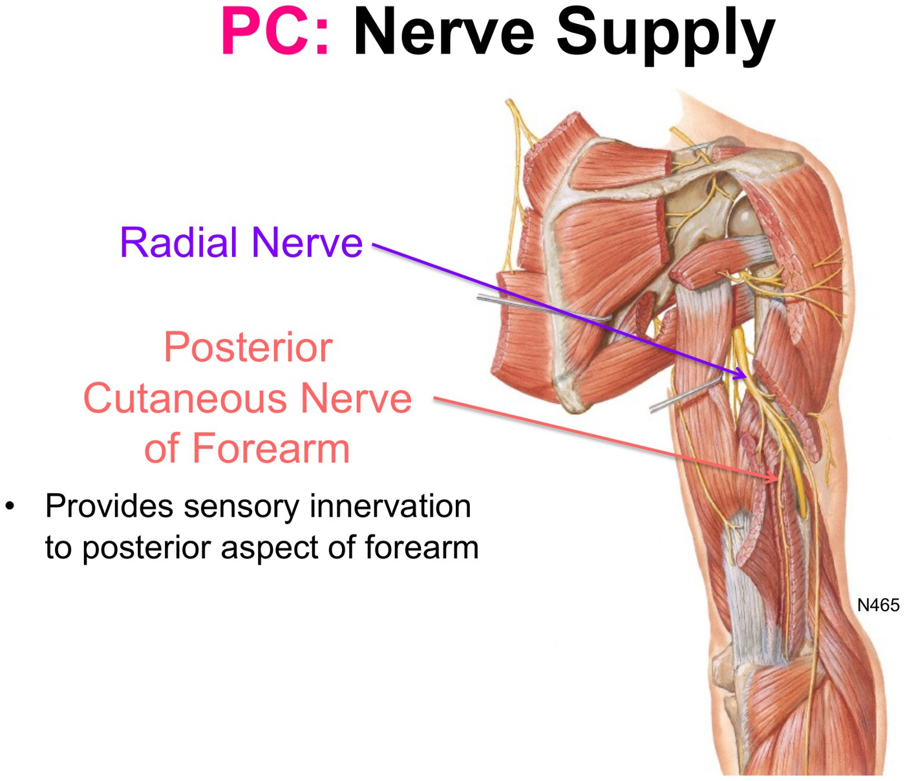
Posterior cutaneous nerve of the forearm. Slide from the deck (Netter).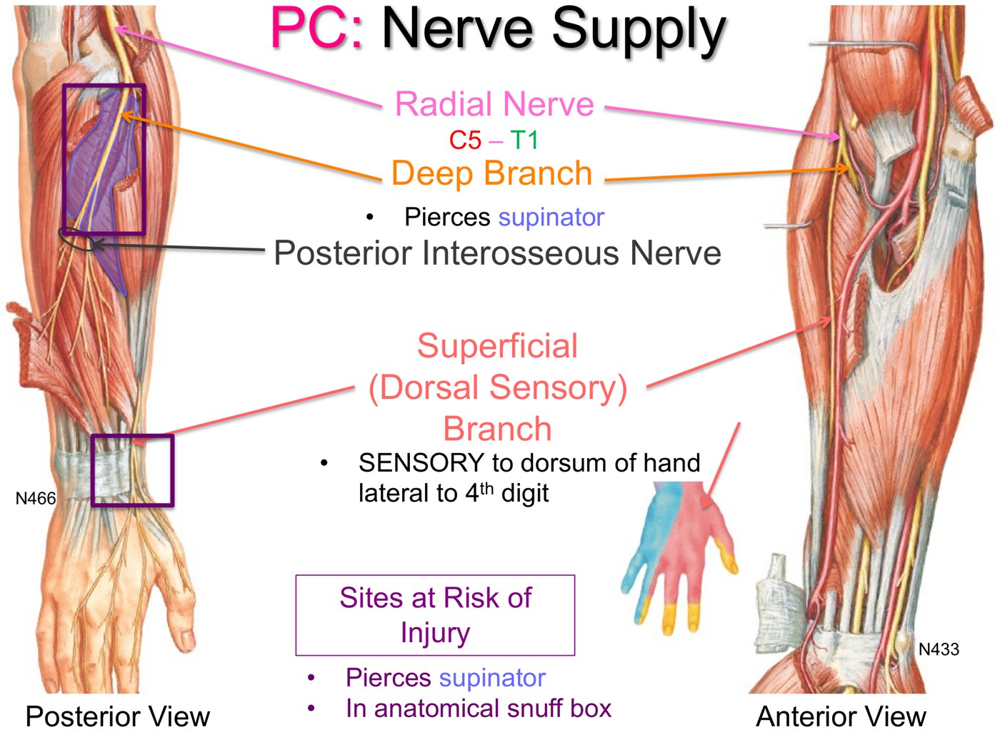
Deep vs superficial branch. Slide from the deck (Netter).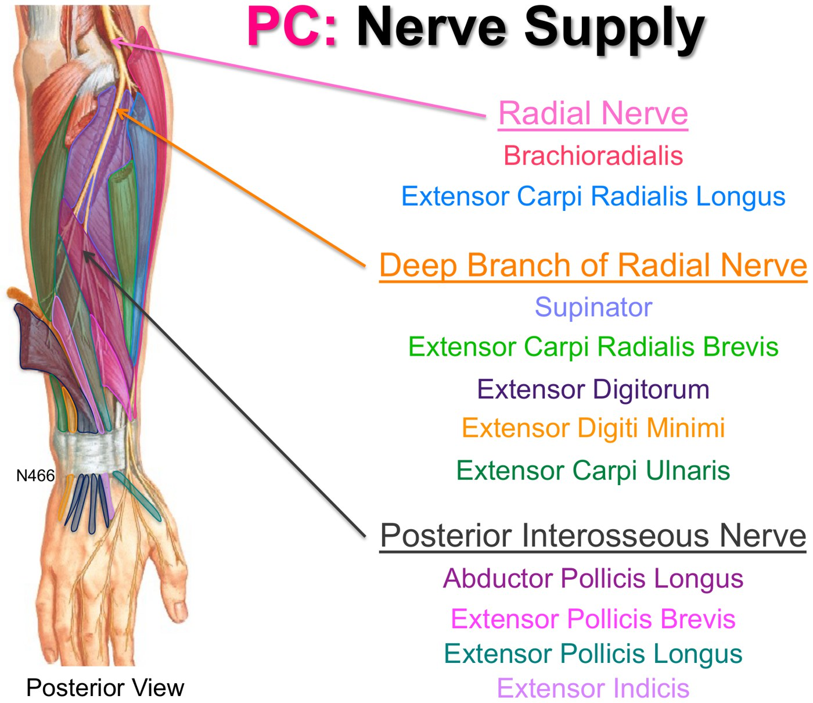
Which branch supplies which muscle. Slide from the deck (Netter).The radial nerve supplies the entire posterior arm and forearm. The slides split it into radial (brachioradialis, ECRL), deep branch and posterior interosseous nerve, because clinicians often name the branch. Dr. Martin: for the anatomy, answering “radial nerve” is correct.
A snuffbox story: an elastic sheet strap flicked into Dr. Martin's snuffbox and injured her superficial radial nerve, numbing the lateral thumb. Sensation came back over 4–5 months as the nerve regrew.
Sensation of the Hand, and Testing Levels
| Nerve | Skin of the hand |
|---|---|
| Superficial branch of the radial | Dorsum, lateral (thumb side), up to just past the PIP joints |
| Ulnar (with its dorsal branch) | Medial hand, front and back: the medial 1½ digits |
| Median | Palmar lateral 3½ digits and palm (the area the radial covers on the back), plus the dorsal fingertips |
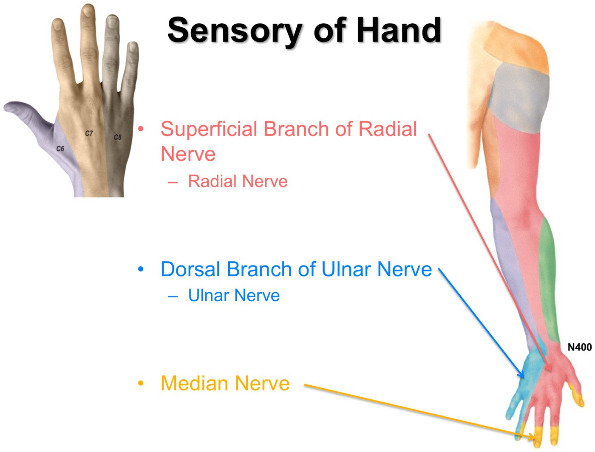
Hand sensation by nerve. Slide from the deck (Netter).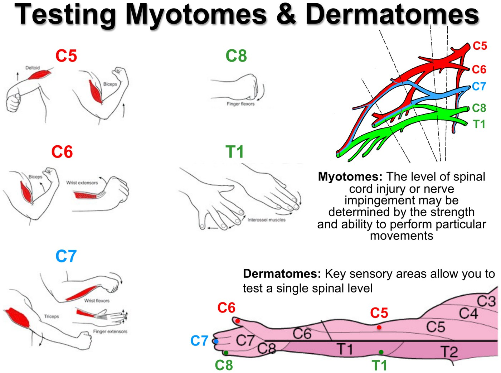
Testing spinal levels. Slide from the deck.Testing spinal levels (from the slide; a peripheral nerve's territory spans several levels). Movements: C5 deltoid abduction + biceps; C6 biceps + wrist extension; C7 triceps, wrist flexion and finger extension; C8 finger flexion; T1 finger abduction/adduction. Sensory test sites: C5 lateral elbow, C6 thumb, C7 middle finger, C8 little finger, T1 medial elbow. If biceps is weak with a normal deltoid and weak wrist extension, think C6 rather than C5. The matching knowledge check pairs C5 arm abduction, C6 wrist extension, C7 elbow extension, C8 finger flexion and T1 finger abduction/adduction.
Knowledge checks
A 26-year-old's arm “feels funny” after six weeks on crutches, and the radial nerve is damaged. What can't he do? → extend the elbow, extend the wrist and supinate the forearm: the radial nerve runs the whole posterior arm and forearm. He can still abduct the arm, flex the elbow and wrist, and pronate.
A 31-year-old's hand goes numb after a rugby game; EMG shows the nerve behind the medial epicondyle is injured. Sensory loss? → the medial 1½ digits and the palm (ulnar).
Nerve Problems at the Elbow
Dr. Cassidy's recording. The approach and the differential are the same as in 8.5.
Ulnar Neuropathy at the Elbow (Cubital Tunnel Syndrome)
The ulnar nerve can also be compressed at the wrist, but that's less common. Here the problem is where it runs through the cubital tunnel, behind the medial epicondyle, its most common site of compression.
| Causes of irritation | How |
|---|---|
| Direct trauma | Hitting the funny bone |
| Repeated pressure | Leaning on a desk |
| Sustained elbow flexion | Stretches the nerve round the corner, e.g. sleeping with the arm bent under the head |
| Subluxation | The nerve slips partly in and out of its groove as the elbow bends |
| Ligament hypertrophy? Medial epicondylosis (bulk)? | Pressure from neighbouring tissue |
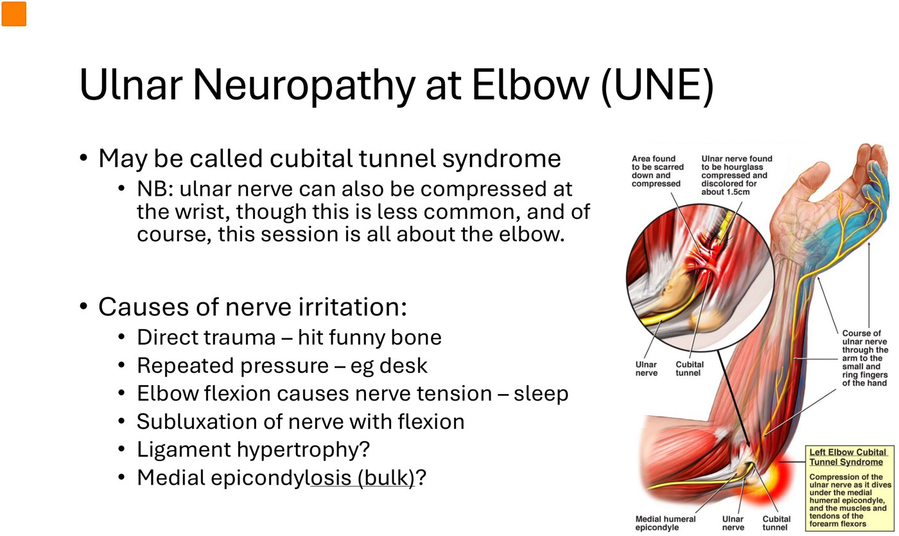
The cubital tunnel. Slide from the deck.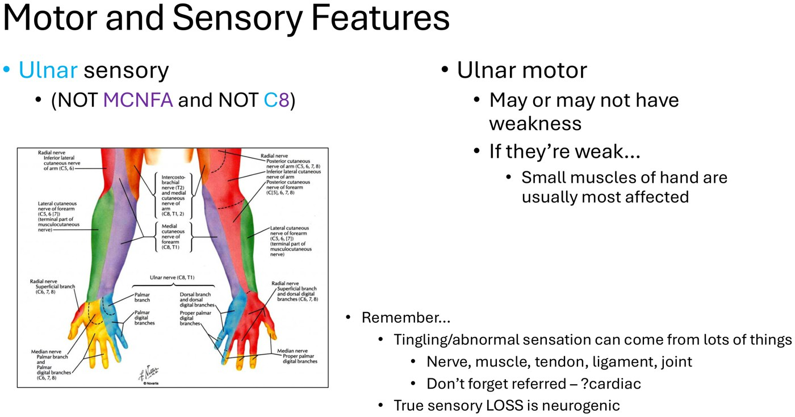
Ulnar, not MCNFA, not C8. Slide from the deck.| Feature | Detail |
|---|---|
| Symptoms | Medial elbow pain; numbness and tingling down the medial forearm into the ring and small fingers, which “fall asleep” |
| Tinel's sign | Tapping lightly over the nerve at the entrapment site reproduces tingling in its distribution (here, digits 4 and 5) |
| Objective sensory loss | In the ulnar territory of the hand (palmar and dorsal medial hand, digits 4 and 5). The medial forearm is spared: patients feel tingling there, but it belongs to the medial cutaneous nerve of the forearm. A C8 radiculopathy would affect both areas. |
| Motor | May or may not be weak; if weak, it's the small muscles of the hand |
| Keep perspective | Tingling can come from nerve, muscle, tendon, ligament, joint, or referred pain (think cardiac). True sensory loss is neurogenic. |
Significant or progressive weakness is the red flag and may need earlier, more aggressive treatment. Subjective symptoms alone aren't.
Confirm the diagnosis and grade its severity, especially if the diagnosis is unclear or the hand is weak.
Irritation (neuritis) and damage (neuropathy) can be told apart on EMG/NCS. Neuritis is fully reversible, and so is mild neuropathy. Recovery depends on the patient changing habits.
Avoid external pressure (don't lean on it; fix the workstation). Avoid elbow hyperflexion overnight with a towel splint (a towel taped round the arm) or an elbow pad.
Not much: nerves recover when they're put in a happy position.
If refractory or severe: ulnar neurolysis (free it from scar and surrounding tissue) or anterior transposition (move it in front of the medial epicondyle, out of the way of pressure and stretch).
Knowledge check
What sensory findings set ulnar neuropathy at the elbow apart from other nerve lesions? → numbness on the palmar and dorsal surfaces of the medial hand and the 4th and 5th digits. It doesn't run up the medial forearm or arm, and it isn't limited to the dorsal digits.
Built from Dr. Charys Martin and Dr. Caitlin Cassidy's “Clinical Approach to the Neurovascular Supply of the Distal Upper Extremity” module: the four recordings (forearm vessels, anterior and posterior forearm nerves, nerve problems at the elbow), the knowledge checks, the 30-slide detailed deck and Dr. Martin's notes. Left out: the clinical photographs on the cubital fossa slide, the towel-splint photo and the angiogram's unkeyed labels (D–F). Discrepancies flagged: this deck (and the 8.4 mini-text) gives the ulnar nerve C7, 8, T1; the 8.1 and 8.4 slides give C8, T1. In the snuffbox story Dr. Martin puts peripheral nerve regrowth at about 1 cm a month; the figure usually quoted is about 1 mm a day. Caption corrections: cubital fossa (“cubicle”, “kubectl”), brachioradialis (“break your radial”), pronator teres (“Pronate or Terry”, “prone territories”), cephalic and basilic (“phallic”, “basilisk”, “Cilic”), deltopectoral (“delta pectoral”), the cephalic draining into the axillary vein (said as “oxalate artery”), median cubital (“median cubicle”), flexor retinaculum (“rep macklem”), hypoesthesia (“hypo seizure”), pronator syndrome (“Pro Nader”), flexor carpi ulnaris (“carpi on there”, “carpal Maris”), supracondylar (“super consular”), Guyon's canal (“Guyanese canal”), myotomes and dermatomes (“Myo Tom's”, “Dermott homes”), supinator (“super monitor”), ulnar neuropathy (“honor and or apathy”), cubital tunnel (“pubertal tunnel”), Tinel's (“channel”, “tonal”) and neurolysis (“neural lysis”).